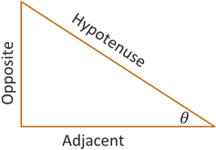
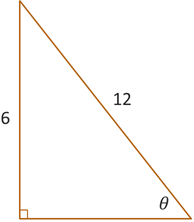
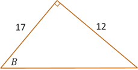
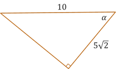
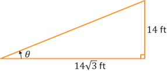
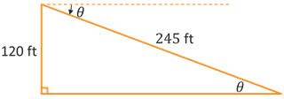

Inverse Trig Functions
Trigonometric Functions
Trigonometric Functions
In precalculus algebra, you learned about inverse functions. One way to think about inverses is that a function \(f\) and its inverse \(f^{-1}\) flip inputs and outputs. In other words, if \(y = f(x)\) then \(x = f^{-1}(y)\). If the point \((a,b)\) is on the graph of \(f\), then the point \((b,a)\) is on the graph of \(f^{-1}\). If we apply this relationship to our trigonometric functions of right triangles, such as \(\sin(\theta) = \frac{\text{Opp}}{\text{Hyp}}\), then the angle \(\theta\) is the input and the ratio of the two sides is the output. If we flip those, then the ratio of sides becomes the input of the inverse sine function and the angle becomes the output.
For a right triangle given the length of two sides, we can determine the acute angle \(\theta\) using the following inverse functions.
Note that you may see the inverse trig functions expressed without the -1 exponent, such as \(\arcsin\) instead of \(\sin^{-1}\). You can read these as "arc sine" or "inverse sine."
When computing the values of inverse trig functions without technology, it can be helpful to think about the problem in reverse so that we can use the right triangle trigonometry and unit circle that we learned about earlier. So for example, how can we determine the exact value of \(\sin^{-1}\left(\frac{\sqrt{3}}{2}\right)\)? Well, first remember than an inverse function computes the angle, so we could express this as \(\theta = \sin^{-1}\left(\frac{\sqrt{3}}{2}\right)\). Then, we can apply our original idea that functions and inverse functions swap their inputs and outputs. This means we can rewrite \(\theta = \sin^{-1}\left(\frac{\sqrt{3}}{2}\right)\) as \(\sin(\theta) = \frac{\sqrt{3}}{2}\). What angle makes sine equal to \(\frac{\sqrt{3}}{2}\)? From our right triangle trig and the unit circle, we know that \(\sin(60^{\circ}) = \frac{\sqrt{3}}{2}\). So we can conclude that the value of \(\sin^{-1}\left(\frac{\sqrt{3}}{2}\right)\) is 60°.
Example #1: Find the exact value of the angle \(\theta\) in radians for the given triangle illustrated below.
In the triangle above, we are given the length of the side opposite \(\theta\) and the length of the hypotenuse. This means that in order to find the angle, we need to use inverse sine.
\[\begin{align*} \theta &= \sin^{-1}\left(\frac{\text{Opp}}{\text{Hyp}}\right) \\ \theta &= \sin^{-1}\left(\frac{6}{12}\right) \\ \theta &= \sin^{-1}\left(\frac{1}{2}\right) \end{align*}\]From our study of right triangles and the unit circle, we know that \(\sin(30^{\circ}) = \frac{1}{2}\), so we can conclude that \(\theta = 30^{\circ}\).
Example #2: Find the approximate value of the angle \(B\) in degrees (rounded to 1 decimal place) for the given triangle illustrated below.
In the triangle above, we are given the length of the side opposite \(B\) and the length of the side adjacent to \(B\). This means that in order to find the angle, we need to use inverse tangent.
\[\begin{align*} \theta &= \tan^{-1}\left(\frac{\text{Opp}}{\text{Adj}}\right) \\ \theta &= \tan^{-1}\left(\frac{12}{17}\right) \end{align*}\]If we try flipping the inputs and outputs, we could rewrite this as \(\tan(\theta) = \frac{12}{17}\), however this fraction is not one of the nice values that we saw on our unit circle or with the 45-45-90 or 30-60-90 triangles. So, we will need to use technology to compute this value. Whatever technology you use, be sure it is set to Degree mode. Then try computing the value. You should get \(B = 35.22^{\circ}\). If you get 0.61466, then your technology is set to Radian mode.
Self-Check #1: Find the exact value of the angle \(\alpha\) in degrees for the given triangle illustrated below. (Enter an exact value.)
(Answer: 45°) -- For angle \(\alpha\) in the triangle above, we are given the adjacent side of length \(5\sqrt{2}\) and the hypotenuse of length \(10\). Working with the adjacent side and hypotenuse means we want to use cosine. This results in the equation \(\alpha = \arccos\left(\frac{5\sqrt{2}}{10}\right)\). Remember that \(\arccos\) is just another way of expressing \(\cos^{-1}\). They mean the same thing, so we can use either expression. Continuing on, we can simplify the inner fraction which results in \(\alpha = \arccos\left(\frac{\sqrt{2}}{2}\right)\). If we then flip the input/output, we get the equation \(\cos(\alpha) = \frac{\sqrt{2}}{2}\). From our right triangles and unit circle, we know that \(\cos(45^{\circ}) = \frac{\sqrt{2}}{2}\), so we can conclude that \(\alpha = 45^{\circ}\).
Self-Check #2: An escalator is being designed for a multilevel building to provide access to the second floor, which is \(14\) feet high. If the horizontal length of the escalator is \(14\sqrt{3}\) feet, what is its angle of elevation in degrees? (Enter an exact value.)
(Answer: 30°) -- It will usually be helpful to draw an illustration to represent the problem we are given. In this case, we will have the triangle below.
Since we are given the opposite and adjacent sides of the triangle relative to the acute angle of elevation, we will want to use tangent. To find the angle, we will have the equation \(\theta = \tan^{-1}\left(\frac{14}{14\sqrt{3}}\right) = \tan^{-1}\left(\frac{1}{\sqrt{3}}\right)\). Swapping the input/output results in the equation \(\tan(\theta) = \frac{1}{\sqrt{3}}\). This looks like one of the values we saw with the 30-60-90 right triangle and unit circle, which would give us the equation \(\tan(30^{\circ}) = \frac{1}{\sqrt{3}}\). So we can conclude that the angle of elevation is 30°.
Self-Check #3: Abrar is flying a drone to take aerial pictures for a landscape architecture project. During one session, Abrar kept the drone hovering stationary at a height of 120 feet. Using a range finder on the drone, he was able to determine that the distance from where the drown was hovering down to a sign in the distance was 245 feet. What is the angle of depression from the drone to the sign? (Enter your answer in degrees rounded to 2 decimal places.)
(Answer: 29.33°) -- Again, let's start by drawing an illustrion. Remember that the angle of depression is a rotation downward from the horizontal. So depending on how we draw our triangle, the angle of depression may be on the outside of the triangle above the hypotenuse. However, the angle of depression (outside the triangle) will be equal to the angle of elevation (inside the triangle). In the illustration below, the angle of elevation is at the very top of the triangle, outside and above the hypotenuse. The angle of elevation is at the bottom of the triangle, inside and below the hypotenuse.
If we consider the acute angle \(\theta\) inside the triangle, then we are given the length of the opposite side and the length of the hypotenuse. That means we will use sine. We start with the equation \(\theta = \sin^{-1}\left(\frac{120}{245}\right) = \sin^{-1}\left(\frac{24}{49}\right)\). The inner fraction does not simplify to one of our special triangle or unit circle values, so we will need to use technolgoy (set to degree mode). The result is \(\theta \approx 29.33^{\circ}\).
©2025 M4thG33x (new window) Some Rights Reserved.